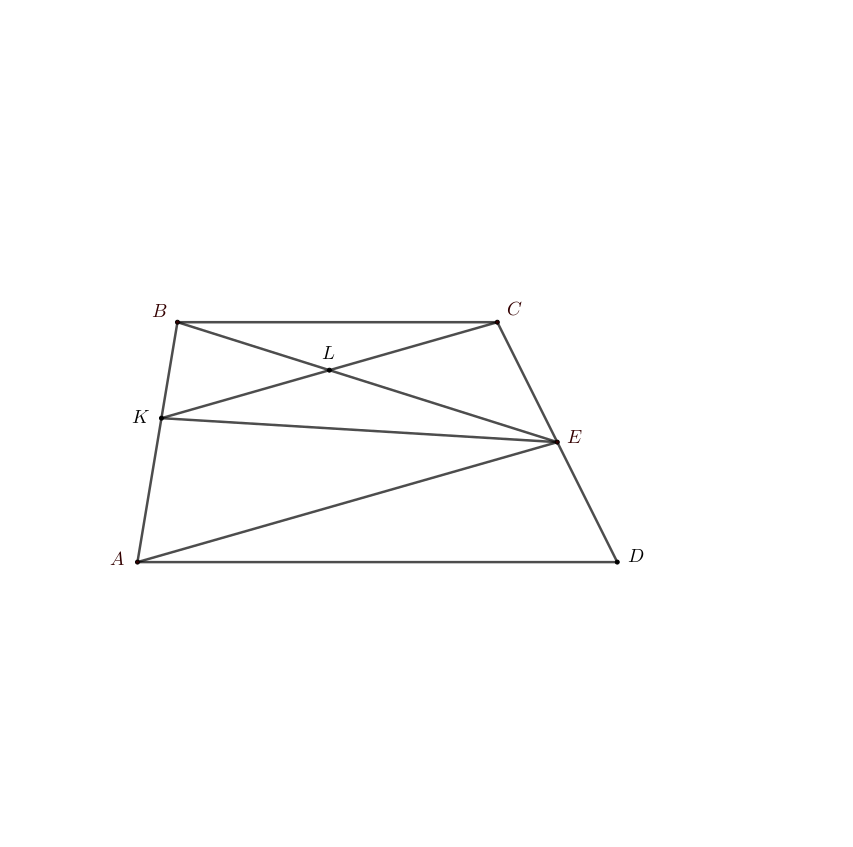

Решение задачи №6

Точка Е — середина боковой стороны CD трапеции ABCD. На стороне АВ взяли точку К так, что прямые СК и АЕ параллельны. Отрезки ВЕ и СК пересекаются в точке L.
а) Докажите, что EL — медиана треугольника КСЕ.
б) Найдите отношение площади треугольника ВLC к площади четырехугольника AKCD, если площадь трапеции ABCD равна 100, а ВС:AD = 2:3.
Решение пункта а)
Продлим АЕ за точку Е до пересечения с прямой ВС.
\( \angle{CEF} = \angle{DEA} \) как вертикальные.
\( \angle{EAD} = \angle{EFC} \) как накрестлежащие при параллельных прямых AD, BF и секущей AF.
Значит, \( \angle{ADE} = \angle{FCE} \)
По условию, \( |CE| = |ED| \)
Тогда \( \triangle AED = \triangle FEC \)
\( |AE| = |EF| \Rightarrow BE \) - медиана
\( CK || AF \Rightarrow \triangle BKC \sim \triangle BAF \)
BE - медиана, значит BL - медиана.